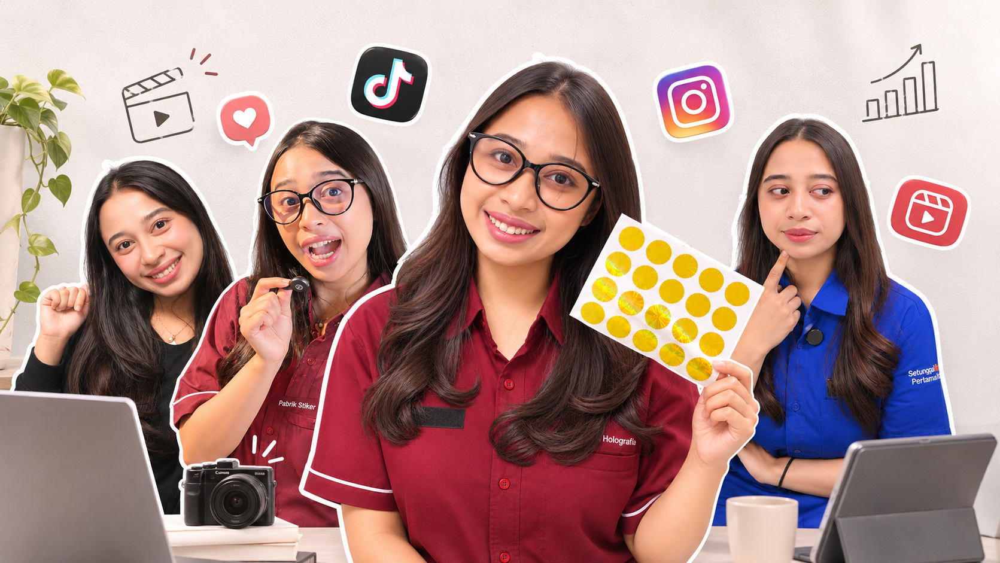

01 / PROGRAM CAMPAIGN
#diSAPAshieldtag!
Awarness
HELLO, I'M DIAMONDITA AISYA AZZAHRA
Aku percaya bahwa ide yang baik bukan hanya tentang kreativitas, tetapi juga bagaimana mengubahnya menjadi strategi dan hasil yang bermakna.
A LITTLE INTRODUCTION

Aku Social Media Specialist dan Strategist yang juga bisa jadi content creator. Aku merancang dan membuat konten video maupun campaign brand untuk media sosial, dari strategi sampai jadi, lengkap dengan analisis algoritma supaya kontennya tepat sasaran.
Dengan pengalaman lebih dari 3 tahun di bidang
Sosial Media Spesialist dan Sosial Media Strategist
Aku terbiasa mengelola strategi konten, campaign suatu brand,
Sosial Media Management, Sosial Media Analysis,
dan Review and approve Content.
Aku menikmati proses menggabungkan kreativitas
dengan strategi, mulai dari mengembangkan ide,
merancang campaign, memproduksi konten,
hingga mengevaluasi performa.
Years of Experience
Brands Managed
Marketing Approach
Combining strategic thinking, creative execution, and analytical approaches to create meaningful results.
Managing social media platforms, content calendars, audience engagement, and performance evaluation.
Creating content concepts, writing scripts, developing creative briefs, and video editing.
Writing SEO articles, developing content strategies and keyword research.
Coordinating marketing activities, managing workflows, reporting, and supporting business operations.
Monitoring marketing performance, analyzing data, and translating insights into actionable improvements.
MY PORTFOLIO / 2024 — 2026
A collection of marketing, content, and creative projects.
Awarness
Content Perbandingan Product
Konten Edukasi
Konten Ads
Digital Marketing & Content Strategy
Digital Marketing & Content Strategy
LET'S CONNECT
Punya project atau peluang menarik? Mari terhubung.